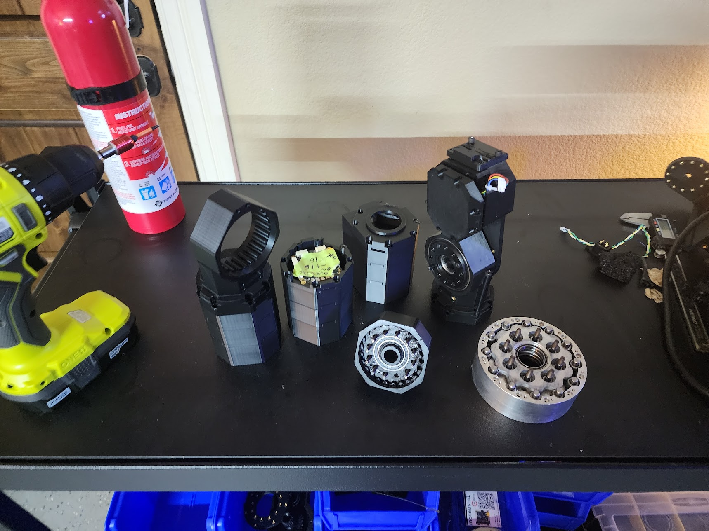
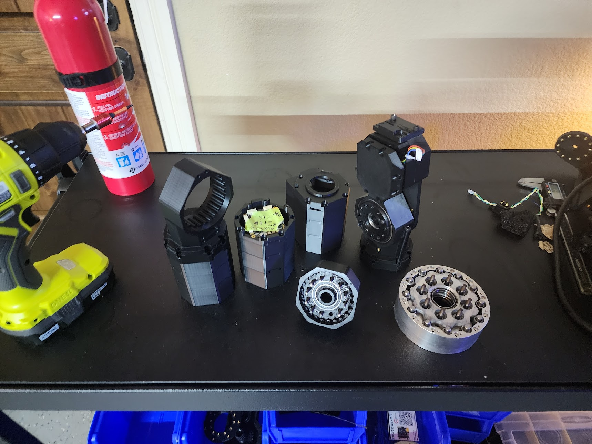

Hi, I’m Chris, an electrical engineer with a track record in robotics, power electronics, and rocket test rigs. I’m pivoting toward mechanical design and actively hunting for mechanically focused roles as I apply for a Mechanical Engineering master’s program starting in 2026.
Chris Vallone
Ongoing Projects in Robotics, Mechanical Design & Embedded Systems
🔧 Humanoid Robots & Custom Actuators
- Developing bipedal humanoid robot platform
- Designing and tuning servo actuators for precision control
- CAD, FEA, and embedded control integration
- Mechanical engineering, manufacturing engineering, DFM, cost minimization

- Design goal: go anywhere a human can go (locomotion) and handle everyday manipulation tasks.
⚙️ Actuator Analysis & Free‑Body Diagrams
Joints use actuators designed to mimic human force & motion control. BLDC FOC and high‑efficiency gearing keep them compact and responsive.

Structural analysis safeguards a 30 Nm continuous / 90 Nm peak torque envelope.

🖼️ Full‑Body Cross‑Sections
Chassis routes battery, power distribution, IMU, compute, and wiring looms in a minimal envelope.


Actuators mount in serial rotary chains—four branches.


Reinforcement‑learning locomotion trained in simulation, transferred to hardware. Inference runs under 5 ms on edge hardware.
📸 As‑Built Actuator Gallery

 

🚀 UT Dallas – Bates Propulsion Labs Rocket Team
Test Stand Design & Fabrication
Brought stand from clean sheet to firing & logging data in less than 6 months. Load calcs, welding, and sensor integration.

🧲 Induction Metal 3D Printer
- Developed experimental deposition rig extruding aluminum wire
- Induction‑heated steel core with molybdenum nozzle (Ø0.4 mm) operates at ~400 ℃ build plate
- Aims to accelerate prototyping of lightweight structural parts
📐 Water Jacket Machining Drawing
Generated GD&T drawing with 0.25 mm profile tolerance for lathe work on a rocket engine water jacket.

🔌 Senior Design – 400 V SynQor Power Supply
- Designed a high‑density, isolated AC-DC converter → , 180V 20A output
- Leveraged SynQor modules
- Safety‑rated enclosure, EMI filtering, and automated thermal shutdown


🏆 FIRST Robotics – 5th Place, World Championship

Designed & built competitive robot for international competition.